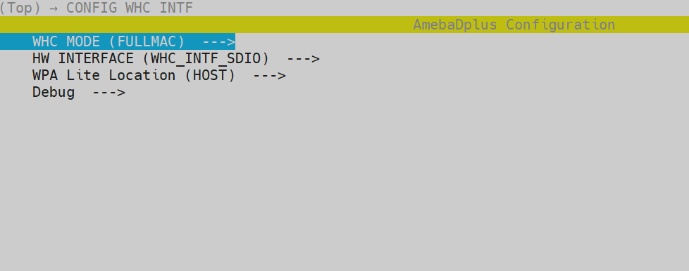
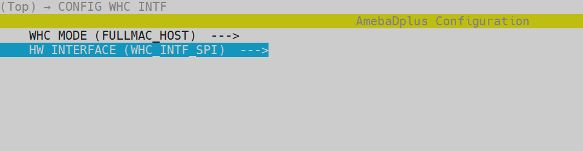
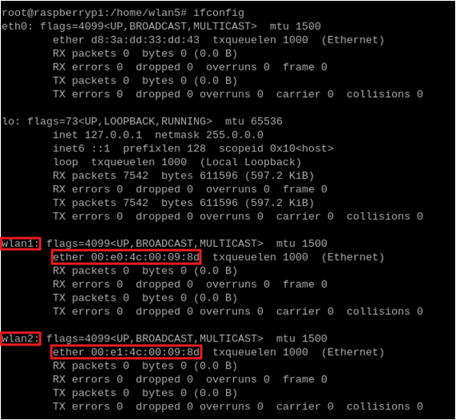

Supported Chips
Ameba SoC |
RTL8721Dx |
RTL8726EA |
RTL8720EA |
RTL8730E |
|---|---|---|---|---|
Supported |
Y |
N |
N |
N |
FullMAC Overview
In the WHC FullMAC solution, Ameba acts as a network interface card connected to the host MCU via UART/SPI/SDIO/USB, providing network connectivity.
FullMAC Architecture
Core Features:
Establishes UART/SPI/SDIO/USB transmission channels between Host and Device
Compatible with Linux standard wpa_supplicant and cfg80211 wireless framework
Supports WiFi/BT command transmission and customized command extensions
{kind=link}
FullMAC architecture
Note
Host OS Support
Linux
FreeRTOS
Zephyr
Note
Bluetooth Stack Compatibility
Linux Host: Bluez Stack
Zephyr Host: Zephyr BT Stack
FreeRTOS: Realtek BT Stack
FullMAC Transmission Interface Specifications
Interface
Wi-Fi
BT
SDIO
Y
YSPI
Y
YUSB
YX
UART
X
X
SDIO (Wi-Fi) + UART (BT)
Y
YSPI (Wi-Fi) + UART (BT)
Y
YUSB (Wi-Fi) + UART (BT)
X
X
Interface
Wi-Fi
BT
SDIO
Y
YSPI
Y
YUSB
X
X
UART
X
X
SDIO (Wi-Fi) + UART (BT)
Y
YSPI (Wi-Fi) + UART (BT)
Y
YUSB (Wi-Fi) + UART (BT)
X
X
Interface
Wi-Fi
BT
SDIO
YX
SPI
X
X
USB
X
X
UART
X
X
SDIO (Wi-Fi) + UART (BT)
X
X
SPI (Wi-Fi) + UART (BT)
X
X
USB (Wi-Fi) + UART (BT)
X
X
FullMAC Feature Details
Features |
Linux host |
FreeRTOS host |
Zephyr host |
|---|---|---|---|
Wi-Fi API |
Standard Linux APIs |
FreeRTOS Wi-Fi APIs |
Standard Zephyr APIs |
Wi-Fi mode |
|
|
|
Wi-Fi security |
|
|
|
Wowlan |
Y |
Y |
Y |
Bluetooth features |
|
|
|
FullMAC File Structure
Wi-Fi
├─ whc
│ ├─ README.md
│ ├─ whc_def.h
│ ├─ whc_dev
│ │ ├─ ipc
│ │ │ ├─ whc_ipc_dev_api.c
│ │ │ ├─ whc_ipc_dev_trx.c
│ │ │ ├─ whc_ipc_dev_trx.h
│ │ │ └─ whc_ipc_device.c
│ │ ├─ sdio
│ │ │ ├─ whc_bridge_sdio_dev.c
│ │ │ ├─ whc_bridge_sdio_dev.h
│ │ │ ├─ whc_fullmac_sdio_dev.c
│ │ │ ├─ whc_fullmac_sdio_dev.h
│ │ │ ├─ whc_sdio_drv.c
│ │ │ └─ whc_sdio_drv.h
│ │ ├─ spi
│ │ │ ├─ whc_bridge_spi_dev.c
│ │ │ ├─ whc_bridge_spi_dev.h
│ │ │ ├─ whc_fullmac_spi_dev.c
│ │ │ ├─ whc_fullmac_spi_dev.h
│ │ │ ├─ whc_spi_dev.c
│ │ │ └─ whc_spi_dev.h
│ │ ├─ usb
│ │ │ ├─ whc_usb_dev.c
│ │ │ └─ whc_usb_dev.h
│ │ ├─ whc_bridge_dev_api.c
│ │ ├─ whc_bridge_dev_api.h
│ │ ├─ whc_dev.h
│ │ ├─ whc_dev_api.c
│ │ ├─ whc_dev_api.h
│ │ ├─ whc_dev_app.c
│ │ ├─ whc_dev_bridge.c
│ │ ├─ whc_dev_bridge.h
│ │ ├─ whc_dev_cust_evt.c
│ │ ├─ whc_dev_cust_evt.h
│ │ ├─ whc_dev_msg_queue.c
│ │ ├─ whc_dev_msg_queue.h
│ │ ├─ whc_dev_protocal_offload.c
│ │ ├─ whc_dev_protocal_offload.h
│ │ ├─ whc_dev_struct.h
│ │ ├─ whc_dev_trx.c
│ │ └─ whc_dev_trx.h
│ ├─ whc_host_rtos
│ │ ├─ ipc
│ │ │ ├─ whc_ipc_host.c
│ │ │ ├─ whc_ipc_host_api.c
│ │ │ ├─ whc_ipc_host_api.h
│ │ │ ├─ whc_ipc_host_api_basic.c
│ │ │ ├─ whc_ipc_host_api_ext.c
│ │ │ ├─ whc_ipc_host_trx.c
│ │ │ ├─ whc_ipc_host_trx.h
│ │ │ └─ whc_ipc_host_zephyr.c
│ │ ├─ spi
│ │ │ ├─ whc_spi_host.c
│ │ │ ├─ whc_spi_host.h
│ │ │ ├─ whc_spi_host_trx.c
│ │ │ └─ whc_spi_host_trx.h
│ │ ├─ whc_host.h
│ │ ├─ whc_host_api.c
│ │ ├─ whc_host_api.h
│ │ ├─ whc_host_api_basic.c
│ │ ├─ whc_host_api_ext.c
│ │ ├─ whc_host_cust_evt.c
│ │ ├─ whc_host_cust_evt.h
│ │ └─ whc_rtos
│ │ ├─ os_wrapper_memory.c
│ │ ├─ os_wrapper_mutex.c
│ │ └─ os_wrapper_semaphore.c
│ ├─ whc_ipc.h
│ ├─ whc_ipc_cfg.h
│ ├─ whc_ipc_msg_queue.c
│ └─ whc_ipc_msg_queue.h
├─ cfg80211_fullmac
│ ├─ Kconfig
│ ├─ Makefile
│ ├─ fullmac_setup.sh
│ ├─ fullmac
│ │ ├─ whc_fullmac_host_wiphy.c
│ │ ├─ whc_fullmac_host_regd.c
│ │ ├─ whc_fullmac_host_regd.h
│ │ ├─ whc_fullmac_host_protocal_offload.c
│ │ ├─ whc_fullmac_host_promisc.c
│ │ ├─ whc_fullmac_host_promisc.h
│ │ ├─ whc_fullmac_host_proc.c
│ │ ├─ whc_fullmac_host_proc.h
│ │ ├─ whc_fullmac_host_pkt_rx.c
│ │ ├─ whc_fullmac_host_ops_p2p.c
│ │ ├─ whc_fullmac_host_ops_nan.c
│ │ ├─ whc_fullmac_host_ops_key.c
│ │ ├─ whc_fullmac_host_ops_ap.c
│ │ ├─ whc_fullmac_host_ops.c
│ │ ├─ whc_fullmac_host_netdev_ops_p2p.c
│ │ ├─ whc_fullmac_host_ioctl.c
│ │ ├─ whc_fullmac_host_ioctl.h
│ │ ├─ whc_fullmac_host_event_tx.c
│ │ ├─ whc_fullmac_host_event_rx.c
│ │ ├─ whc_fullmac_host_cust_evt.c
│ │ ├─ whc_fullmac_host_cust_evt.h
│ │ ├─ whc_fullmac_host_cfgvendor.c
│ │ ├─ whc_fullmac_host_cfgvendor.h
│ │ ├─ whc_fullmac_host_acs.c
│ │ ├─ whc_fullmac_host_acs.h
│ │ ├─ usb
│ │ │ └─ Kbuild
│ │ ├─ spi
│ │ │ └─ Kbuild
│ │ ├─ sdio
│ │ │ └─ Kbuild
│ ├─ common
│ │ ├─ autoconf.h
│ │ ├─ whc_host_event.h
│ │ ├─ whc_host_hci.c
│ │ ├─ whc_host_hci.h
│ │ ├─ whc_host_memory.c
│ │ ├─ whc_host_ops.c
│ │ ├─ whc_host_pkt_rx.c
│ │ ├─ whc_host_pkt_tx.c
│ │ ├─ whc_host_trx.h
│ │ ├─ netdev
│ │ │ ├─ whc_host_drv_probe.c
│ │ │ ├─ whc_host_drv_probe.h
│ │ │ ├─ whc_host_ethtool_ops.c
│ │ │ ├─ whc_host_ethtool_ops.h
│ │ │ ├─ whc_host_function.h
│ │ │ ├─ whc_host_linux.h
│ │ │ ├─ whc_host_netdev_ops.c
│ │ │ ├─ whc_host_netdev_ops.h
│ │ │ └─ whc_host_wiphy.h
│ │ ├─ sdio
│ │ │ ├─ whc_sdio_host.h
│ │ │ ├─ whc_sdio_host_drvio.c
│ │ │ ├─ whc_sdio_host_drvio.h
│ │ │ ├─ whc_sdio_host_fwdl.c
│ │ │ ├─ whc_sdio_host_init.c
│ │ │ ├─ whc_sdio_host_ops.c
│ │ │ ├─ whc_sdio_host_ops.h
│ │ │ ├─ whc_sdio_host_probe.c
│ │ │ └─ whc_sdio_host_reg.h
│ │ ├─ spi
│ │ │ ├─ whc_spi_host.h
│ │ │ ├─ whc_spi_host_ops.c
│ │ │ ├─ whc_spi_host_probe.c
│ │ │ └─ spidev-overlay.dts
│ │ └─ usb
│ │ ├─ whc_usb_host.h
│ │ ├─ whc_usb_host_ops.c
│ │ └─ whc_usb_host_probe.c
Bluetooth
FullMAC Hardware Configuration
Interface Connections
Pin connections between Ameba and Raspberry Pi are as follows:
Interface |
SoC |
Function |
Description |
|---|---|---|---|
SDIO |
PB6 |
SDIO_DAT2 |
SDIO pins |
PB7 |
SDIO_DAT3 |
||
PB8 |
SDIO_CMD |
||
PB9 |
SDIO_CLK |
||
PB13 |
SDIO_DAT0 |
||
PB14 |
SDIO_DAT1 |
||
SPI |
PB24 |
SPI_MOSI |
SPI pins |
PB25 |
SPI_MISO |
||
PB23 |
SPI_CLK |
||
PB26 |
SPI_CS |
||
PB8 |
DEV_TX_REQ |
||
PB9 |
DEV_READY |
||
USB??? |
PB6 |
SDIO_DAT2 |
SDIO_DAT2 |
PB7 |
SDIO_DAT3 |
SDIO_DAT3 |
|
PB8 |
SDIO_CMD |
SDIO_CMD |
|
PB9 |
SDIO_CLK |
SDIO_CLK |
|
PB13 |
SDIO_DAT0 |
SDIO_DAT0 |
|
PB14 |
SDIO_DAT1 |
SDIO_DAT1 |
|
UART |
PB14 |
SDIO_DAT1 |
SDIO_DAT1 |
PB14 |
SDIO_DAT1 |
SDIO_DAT1 |
Interface |
Raspberry Pi |
Function |
Description |
|---|---|---|---|
SDIO |
GPIO 26 |
SDIO_DAT2 |
SDIO pins |
GPIO 27 |
SDIO_DAT3 |
||
GPIO 23 |
SDIO_CMD |
||
GPIO 22 |
SDIO_CLK |
||
GPIO 24 |
SDIO_DAT0 |
||
GPIO 25 |
SDIO_DAT1 |
||
SPI |
GPIO 10 |
SPI_MOSI |
SPI pins |
GPIO 9 |
SPI_MISO |
||
GPIO 11 |
SPI_CLK |
||
GPIO 8 |
SPI_CS |
||
GPIO 23 |
DEV_TX_REQ |
||
GPIO 22 |
DEV_READY |
||
USB??? |
GPIO 26 |
SDIO_DAT2 |
SDIO_DAT2 |
GPIO 27 |
SDIO_DAT3 |
SDIO_DAT3 |
|
GPIO 23 |
SDIO_CMD |
SDIO_CMD |
|
GPIO 22 |
SDIO_CLK |
SDIO_CLK |
|
GPIO 24 |
SDIO_DAT0 |
SDIO_DAT0 |
|
GPIO 25 |
SDIO_DAT1 |
SDIO_DAT1 |
|
UART |
GPIO 25 |
SDIO_DAT1 |
SDIO_DAT1 |
GPIO 25 |
SDIO_DAT1 |
SDIO_DAT1 |
Note
SPI DEV_TX_REQ: Ameba notifies Host of pending data transmission via rising edge on this pin
SPI DEV_READY: Ameba status indicator
High level (1): Device ready to receive data
Low level (0): Device busy (pause transmission)
Note
Default SDIO pins defined in Ameba SDK are used. Modify pinmux configuration in SPDIO_Board_Init function at:
component/soc/amebadplus/hal/src/spdio_api.c
Host-side SDIO interrupt requirements:
SDIO_DATA1 must be configured for SDIO function (not GPIO)
Switch to polling mode if Host doesn’t support SDIO interrupts
SDIO Adapter Board
To avoid signal interference from flying wires, use dedicated adapter board for SDIO connections:

FullMAC SDIO Adapter Board (Physical Diagram)
Note
Realtek official adapter boards will be available soon. Currently request samples via <claire_wang@realsil.com.cn>.
Raspberry Pi Direct Connection
For high-speed scenarios, directly solder Ameba SDIO pins to Raspberry Pi GPIO:

Ameba-Raspberry Pi Direct Connection Diagram
FullMAC WiFi Device Driver Porting Guide
In the directory
{SDK}/amebadplus_gcc_project, execute./menuconfig.py:Locate , and select :

Locate , and select the desired interface:

Run
./build.pyto generatekm4_boot_all.binandkm0_km4_app.bin.Use the image tool to download the image to the development board.
{kind=link}
FullMAC Wi-Fi Host Driver Porting Guide
Ameba as FullMAC Host Guide
Configuration
Execute config tool in directory
{SDK}/amebadplus_gcc_project:./menuconfig.py
Navigate to and select interface:

Firmware Compilation
Generate target files:
./build.py
Output Files:
km4_boot_all.binkm0_km4_app.bin
Firmware Flashing
Use dedicated flashing tool to program development board
{kind=link}
Third-party Platform Porting
For other host chips, port these directories to target system:
component/os/freertos
FullMAC is currently tested and validated on Linux kernels 5.4 and 5.10. If you encounter compilation issues on other kernel versions, contact <claire_wang@realsil.com.cn>.
Note
SPI initiates data transfer immediately after CS pin is pulled low and CLK is detected. Corner cases may occur during bus busy states.
Testing shows adding a 7μs delay between CS low and host CLK push ensures safe data transmission.
However, older SPI drivers without spi_delay support may require direct code modification.
Prerequisites
Install dependencies on Linux:
sudo apt-get install build-essential
sudo apt install dhcpcd hostapd dhcpd
Interface Activation
Linux PC: Skip this step
Raspberry Pi:
Configure SDIO via
dtoverlay:For Raspberry Pi 4:
sudo dtoverlay sdio poll_once=off
Enable SPI interface:
sudo raspi-configSelect :

Generate device tree overlay:
sudo su cd {driver_path}/cfg80211_fullmac/rtl8730e/spi dtc -@ -Hepapr -I dts -O dtb -o inic_spidev.dtbo spidev-overlay.dts cp inic_spidev.dtbo /boot/overlays/ dtoverlay inic_spidev
Driver Compilation
In directory
/component/wifi/cfg80211_fullmac, run:
./fullmac_setup.sh sdio./fullmac_setup.sh spi./fullmac_setup.sh usbCopy
cfg80211_fullmacto Linux kernel source treeOpen new terminal and compile:
cd {driver_path}/cfg80211_fullmac make
Driver Loading
Module Path:
/cfg80211_fullmac/sdio/fullmac_sdio.kosudo su cp sdio/fullmac_sdio.ko /lib/modules/$(uname -r)/ depmod -a modprobe fullmac_sdio
Module Path:
/cfg80211_fullmac/spi/fullmac_spi.kosudo su cp spi/fullmac_spi.ko /lib/modules/$(uname -r)/ depmod -a modprobe fullmac_spi
Module Path:
/cfg80211_fullmac/usb/fullmac_usb.kosudo su cp usb/fullmac_usb.ko /lib/modules/$(uname -r)/ depmod -a modprobe fullmac_usb
After successful loading, run
ifconfigto verify WiFi devices: Sample Output:Station mode MAC prefix:
00:e0:4cSoftAP mode MAC prefix:
00:e1:4c
 Connect to AP
Note
For Ubuntu: Stop NetworkManager and DHCP services if using CLI:
sudo systemctl stop NetworkManager dhcpcd.service sudo systemctl disable NetworkManager
Create
/etc/wpa_supplicant/wpa_supplicant.conf:ctrl_interface=/var/run/wpa_supplicant network={ ssid="HUAWEI-JX2UX5_HiLink_5G" psk="12345678" }Connect to AP:
wpa_supplicant -D nl80211 -i wlanX -c /etc/wpa_supplicant/wpa_supplicant.conf -dd > /var/wifi_log
Note
wlanXrefers to Station mode device from Step 3Obtain IP:
dhcpcd wlanX
SoftAP Setup
Create
/etc/hostapd/hostapd.conf:driver=nl80211 logger_syslog=-1 logger_syslog_level=2 hw_mode=g channel=6 ssid=aaa_test wpa=2 wpa_passphrase=12345678 wpa_key_mgmt=WPA-PSK wpa_pairwise=CCMP
Create DHCP config
/etc/udhcpd_wlanX.conf:start 192.168.43.20 end 192.168.43.254 interface wlanX opt dns 192.168.43.1 option subnet 255.255.255.0 opt router 192.168.43.1
Start SoftAP:
hostapd /etc/hostapd/hostapd.conf -i wlanX
Set AP IP:
ifconfig wlanX 192.168.43.1
Launch DHCP:
udhcpd -f /etc/udhcpd_wlanX.conf
{kind=link}
FullMAC BT Device Driver Porting Guide
FullMAC BT Host Driver Porting Guide
FullMAC WiFi Throughput
Interface |
Item |
BW 20M (Mbps) |
|---|---|---|
SPI [1] |
TCP RX |
8.3 |
TCP TX |
9.9 |
|
UDP RX |
15.8 |
|
UDP TX |
17.6 |
[1] The data is the test result of device code running in PSRAM, host driver running on 8721Dx (260MHz).
Interface |
Wi-Fi driver location |
Item |
BW 20M (Mbps) |
|---|---|---|---|
SDIO [1] |
KM0 |
TCP RX |
39 |
TCP TX |
39 |
||
UDP RX |
54 |
||
UDP TX |
62 |
||
KM4 (331MHz) |
TCP RX |
41 |
|
TCP TX |
41 |
||
UDP RX |
56 |
||
UDP TX |
62 |
||
SDIO [2] |
KM0 |
TCP RX |
38 |
TCP TX |
39 |
||
UDP RX |
50 |
||
UDP TX |
57 |
||
KM4 (331MHz) |
TCP RX |
38 |
|
TCP TX |
41 |
||
UDP RX |
51 |
||
UDP TX |
58 |
||
SPI [2] |
KM0 |
TCP RX |
14.5 |
TCP TX |
16 |
||
UDP RX |
17.4 |
||
UDP TX |
17.8 |
||
USB [3] |
TCP RX |
||
TCP TX |
|||
UDP RX |
|||
UDP TX |
[1] The data is the test result of device code running in PSRAM, host driver running on Dell Optiplex 3080 MT(SDIO CLK: 50MHz，Kernel: 5.10.25-051025-lowlatency)
[2] The data is the test result of device code running in PSRAM, host driver running on Raspberry Pi 4 Model B(64bit quad-core Cortex-A72 processor, 8GB LPDDR4 RAM, CPU CLK: 1.5GHz，SDIO CLK: 41.67MHz, Kernel: Linux raspberrypi 6.1.0-rpi4-rpi-v8)
[3] The data is the test result of device code running in PSRAM.
FullMAC Memory Footprint
Device
Example with Wi-Fi running on KM0:
Item |
KM0 |
KM4 |
|---|---|---|
txt |
270KB |
31KB |
rodata |
51KB |
9KB |
data+bss |
17KB |
4KB |
heap |
~68KB |
~2.5KB |
Host
Host |
Item |
whc |
|---|---|---|
SPI |
txt |
4.8KB |
bss |
~3.5KB |
|
heap |
~5KB |
Host |
Item |
fullmac_xxx.ko |
|---|---|---|
SDIO |
txt |
88KB |
data |
65KB |
|
bss |
18KB |
|
SPI |
txt |
73KB |
data |
54KB |
|
bss |
18KB |
|
USB |
txt |
|
data |
||
bss |
Note
The characters before .ko are sdio, spi or usb, corresponding to different hosts.